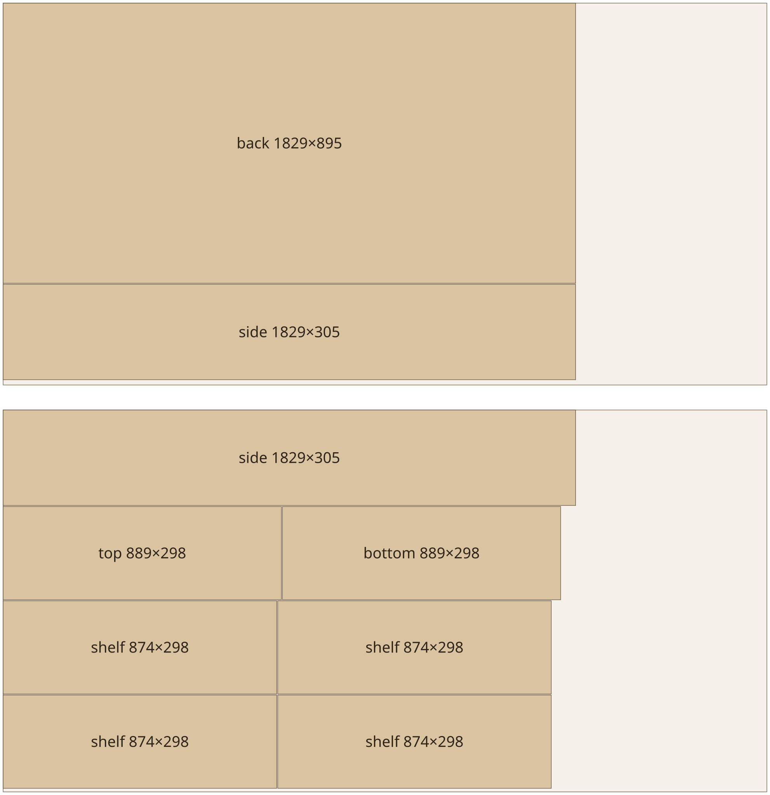

Model Context Protocol · 2026-07-28 · Rust
Five servers.
Each does one hard thing well.
Give your agent a woodshop calculator, a binary inspector, a protocol auditor, a private health warehouse and a pair of hands for your phone. Single static binaries. No accounts. Nothing leaves your machine unless you ask.
Loading recorded sessions…site/tools/record.py.The servers
Built for what agents get wrong.
Each server answers a whole question in one call, trims its own output to a token budget and explains its errors so the model can recover.
-
joinery
Woodworking that survives contact with the saw. Parametric furniture, cut lists, sheet nesting and shelf‑sag physics.
- Beam-theory sag check with species stiffness and creep
- Guillotine nesting that respects kerf and grain
- Glue-up order derived from the joint graph

Real nest_partsoutput for the bookcase above: 2 sheets, 72.6% yield. -
binscope
Read-only look inside ELF, PE and Mach‑O files — and what changed between two builds.
- 4 coarse tools with next-step hints
- Ranked strings, entropy map
- Release diff flags breaking exports
-
lighthouse
Audits any MCP server: both protocol generations, lint, token cost and an A–F grade.
mcp.lockcatches silent tool edits- CI exit codes for grade and drift
- Graded every server here 100/100
-
vitals
Your Apple Health export and wearable CSVs in a local SQLite warehouse.
- Phone + watch steps counted once
- Readiness score that shows its work
- Redaction mode hides device names
-
handset
A pair of hands for Android and the iOS Simulator, without drowning the model in XML.
- ≥10× smaller than a raw UI dump
- Stable refs, change-only replies
wait_forinstead of sleep-and-retry
Try joinery
Will your shelf sag?
The same beam-theory check the server runs — species stiffness, long-term creep and the 1/32″ per foot limit. Drag the right-hand support or use the controls.
Sag drawn ×40 so millimetres are visible.
- Long-term sag
- –
- Limit
- –
- Of limit
- –
–
Install
Your config, ready to paste.
Pick servers and a client. The link updates as you go, so you can send a teammate the exact setup.
Choose at least one server to see its config.
Graded by its own auditor.
Every server is audited by lighthouse on each push and pinned to an mcp.lock. CI fails below an A or on any silent tool change.
- joineryA
- binscopeA
- lighthouseA
- vitalsA
- handsetA